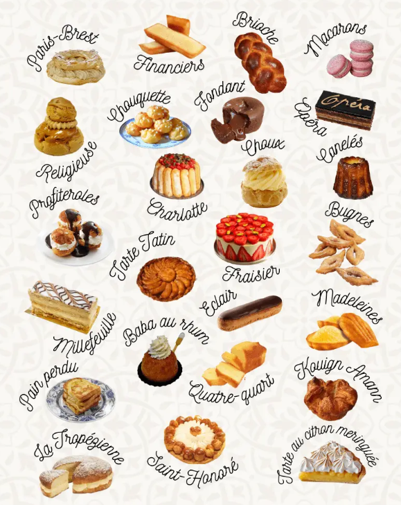

TP3 : Partiel Bases de Données 2022
Durée : 2h Une feuille A4 manuscrite avec des notes de cours/TD/TP autorisée, calculatrice interdite
Dans cet exercice, on désire modéliser de façon très simplifiée le système d’une base de données pour gérer le travail des pâtissiers dans des boulangeries.
Les clés primaires sont soulignées et les clés étrangères sont précédées par un caractère ”#”.
Dans ce sujet, le mot « Patisserie » fait référence à la « préparation pour réaliser des gâteaux » et non à la « boutique ». Le pâtissier est une personne. L’attribut « idPersonne » de la table « realisation » est le patissier qui a réalisé la (les) pâtisserie (s) avec une déclinaison de recette.

Soit le modèle relationnel suivant :
boutique(idBoutique,nom,adresse,codePostal,ville)
estRattache(#idPersonne,#idBoutique,dateEmbauche)
realisation(#idPersonne,#idPatisserie,#numDeclinaison,dateRealisation, nbRealisation)
patisserie(idPatisserie,nom, categorie, prixUnitaire)
recette(#idPatisserie, numDeclinaison, ingredients, description, auteur , annee)
personne(idPersonne ,nomPersonne, prenom, anneeNaissance)
Proposer un modèle conceptuel des données (MCD) associé au modèle relationnel précédent : modèle relationnel complet.
Ne pas utiliser d’identifiant relatif sauf si il n’y a pas d’autre solution dans une relation binaire.
Utiliser le logiciel Looping.
En utilisant le script généré par looping :
Écrire dans un fichier script_patissier.sql le script de création des tables correspondant au modèle ci dessus.
Supprimer toutes les tables si elles existent.
Créer toutes les tables si elles n'existent pas.
(Utiliser les mots clés IF EXISTS lors de la suppression de la table et IF NOT EXISTS lors de la création des tables.)
Écrire les requêtes SQL suivantes (bien numéroter vos requêtes) :
ATTENTION :
+--------------+
| nb_categorie |
+--------------+
| 4 |
+--------------++-----------------------------------+
| nom |
+-----------------------------------+
| gâteau aux marrons |
| bûche poires marrons et chocolat |
+-----------------------------------++-------------+--------+-----------------+
| nomPersonne | prenom | dateRealisation |
+-------------+--------+-----------------+
| DURAND | Jean | 2021-10-02 |
+-------------+--------+-----------------++----------------------+------------------+
| nbMacaronsDifferents | nom |
+----------------------+------------------+
| 2 | macaron chocolat |
| 1 | macaron marrons |
+----------------------+------------------++-----------------------------------+--------------+
| nom | prixUnitaire |
+-----------------------------------+--------------+
| bûche poires marrons et chocolat | 41.5 |
+-----------------------------------+--------------++------------+-------------+----------+----------------+
| idPersonne | nomPersonne | prenom | anneeNaissance |
+------------+-------------+----------+----------------+
| 4 | Klebber | edouard | 1999 |
| 5 | poulain | leo | 1965 |
| 6 | perreira | philippe | 1990 |
+------------+-------------+----------+----------------+ +-----------------+-----------------------+
| nom | prod12−2021−euros |
+-----------------+-----------------------+
| MANTEY | 1485 |
| La RoseMontoise | 152.5 |
+-----------------+-----------------------+—— requêtes plus difficiles
+--------------+-----------------------------------+--------------+
| categorie | nom | prixUnitaire |
+--------------+-----------------------------------+--------------+
| tarte | tarte aux poires | 31.5 |
| viennoiserie | brioche | 31.5 |
| gâteau | bûche poires marrons et chocolat | 41.5 |
| macaron | macaron marrons | 3.5 |
| macaron | macaron chocolat | 3.5 |
+--------------+-----------------------------------+--------------++--------------+--------------+-----------+--------------+--------------+
| idPatisserie | nom | categorie | prixunitaire | nb_pers_diff |
+--------------+--------------+-----------+--------------+--------------+
| 1 | Baba au Rhum | gâteau | 4.15 | 3 |
+--------------+--------------+-----------+--------------+--------------+
Dessiner un nouveau schéma MCD avec les entités/associations. Réutiliser le dernier MCD (question 1). Dans les entités, vous pouvez faire apparaître uniquement les clés et des petits points pour indiquer qu’il y a d’autres attributs si ça ne nuit pas à la compréhension. Si vous supprimez des attributs, faites les apparaître et rayez les.
Utiliser de préférence une autre couleur pour faire apparaître les modifications.
Tenir compte des informations ci-dessous.
On désire ajouter dans le MCD, la quantité d’ingrédients utilisés pour réaliser une recette ainsi que le nombre de gâteaux réalisés avec une recette. Les ingrédients utilisent une seule unité de mesure (poids en Kg, litre, nombre de pièces).
Proposer une solution qui fait apparaître les ingrédients (leurs noms et leur unité), leurs quantités pour réaliser une recette pour produire un certain nombre de gâteaux.
Dans le champ auteur (table « recette »), il y a le nom et le prénom (séparé par un espace) de l’auteur(e) de la recette. « Normaliser » ce champ en modifiant le MCD. Une recette n’a pas forcément un auteur.
utilisation des variables dans MYSQL (wiki)
Tester le script ci-dessous. Ouvrir 2 terminaux (deux sessions différentes), tester le code jusqu’à l’étape 1 et comparer les variables
10 : Donner les boutiques de la ville de valdoie qui ont employé le pâtissier ’jean Mantey’. On précisera pour chaque boutique la date d’embauche et le résultat sera trié par rapport à cette date selon l’ordre chronologique inverse.
+------------+--------+-------------------+------------+---------+--------------+
| idBoutique | nom | adresse | codePostal | ville | dateEmbauche |
+------------+--------+-------------------+------------+---------+--------------+
| 1 | MANTEY | 16 rue principale | 90300 | Valdoie | 2001-06-01 |
+------------+--------+-------------------+------------+---------+--------------+
11 : Donner les personnes de moins de 55 ans (cette année) qui sont auteurs d’au moins une recette.
+-------------+
| auteur |
+-------------+
| Mantey jean |
+-------------+12: Pour chaque nom de pâtisserie, donner le nombre total de réalisations durant l’année 2021. Le résultat sera renommé en ’total2021’.
+-----------------------------------+-----------+
| nom | total2021 |
+-----------------------------------+-----------+
| Baba au Rhum | 143 |
| brioche | 400 |
| bûche poires marrons et chocolat | 20 |
| éclair au chocolat | 10 |
| macaron marrons | 220 |
| tarte aux pommes | 9 |
+-----------------------------------+-----------+
13 : Donner les boutiques n’ayant jamais proposé de pâtisserie à base de Rhum.
+------------+-------------+------------------+------------+---------+
| idBoutique | nom | adresse | codePostal | ville |
+------------+-------------+------------------+------------+---------+
| 4 | le bon pain | 9 rue du chateau | 90000 | Belfort |
+------------+-------------+------------------+------------+---------+
Pour cette dernière requête, ajouter des enregistrements pour obtenir un résultat
INSERT INTO realisation(idPersonne, idPatisserie, numDeclinaison, dateRealisation, nbRealisation)
VALUES (1, 3, 0, '2020-10-02', 99);
INSERT INTO realisation(idPersonne, idPatisserie, numDeclinaison, dateRealisation, nbRealisation)
VALUES (1, 6, 0, '2021-12-02', 99);
14 : Donner les pâtissiers qui ont déjà réalisés au moins une recette de chacune des pâtisseries du catalogue. (indice : Pour ces pâtissiers, il n’existe aucune pâtisserie pour laquelle il n’existe aucune réalisation effectuée par le pâtissier)
+-------------+-------------------------+
| nomPersonne | nb_patisseries_distinct |
+-------------+-------------------------+
| DURAND | 6 |
+-------------+-------------------------+